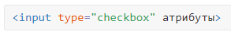
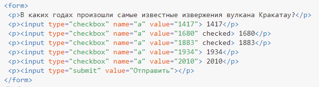

Флажки
Флажки (жарг. чекбоксы) очень похожи на переключатели. Они используют те же атрибуты и шаблоны, за исключением значения атрибута type. Разница между ними состоит в том, что флажки позволяют пользователям выбрать несколько значений и связать их все с одним именем, в то время как переключатели ограничивают пользователей одним значением.
Флажки используют, когда необходимо выбрать любое количество вариантов из предложенного списка. Если требуется выбор лишь одного варианта, то для этого следует предпочесть переключатели (radiobutton). Флажок создается следующим образом.

Атрибуты флажков перечислены в табл. 1.
| Атрибут | Описание |
|---|---|
| name | Имя флажка для идентификации поля. |
| disabled | Блокирует флажок для выбора. |
| form | Идентификатор формы для связывания флажка с элементом <form>. |
| type | Для флажка значение должно быть checkbox. |
| checked | Предварительное выделение флажка. |
| value | Задаёт, какой текст будет отправлен на сервер. |
| autofocus | Элемент получает фокус после загрузки документа. |
| required | Перед отправкой формы обязательно следует поставить галочку. |
Как обычно, флажки нельзя вкладывать внутрь ссылок и кнопок.
Использование флажков показано в примере 1.
Поскольку флажки здесь являются одной группой, то значение атрибута name у них одинаковое.
Пример 1. Создание флажков
